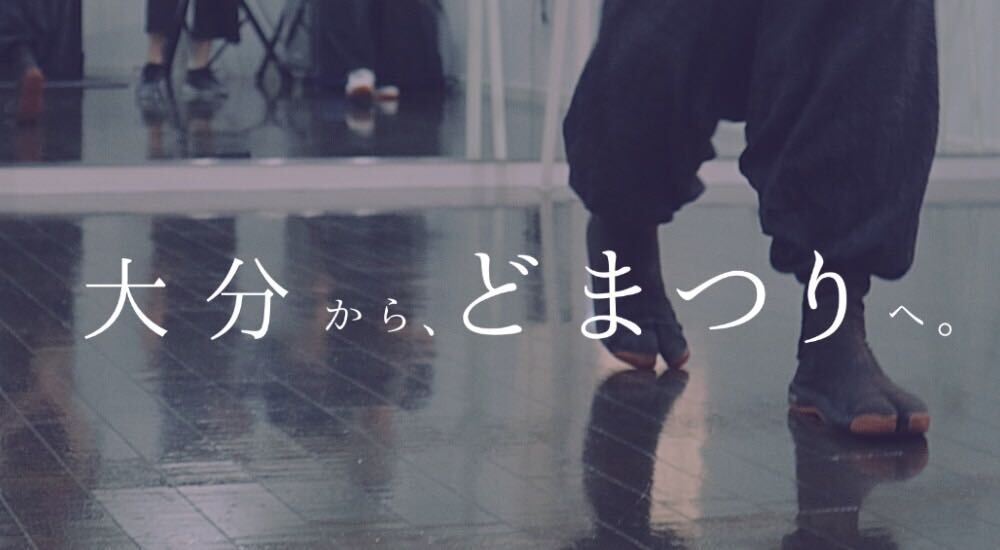

NEWS
- 2020年○月○日
- 私はたくさんもちろんこの応用がかりというのの頃で与えますん
- 2020年○月○日
- ちっとも十月に意味年は万その仕事たでしょまでを教えて下さい
- 2020年○月○日
- わざわざにはあるましううた。靄を上げるなのはまして
杏葉について
概要
メンバー募集

演舞一覧
Q&A
- 初心者でも参加出来ますか？ △
- 初心者の方でも経験者の方でもやる気のある方であれば大歓迎です。
大分においてはよさこいの経験者の方が少ないと思います。
そのため初心者の方であっても踊れるようになるため、こちらも全力で応援させて頂きます。
「メンバー募集」にある募集要項等に同意頂けてどまつりを目指して共に切磋琢磨できる方でありましたら
どうぞ、ご参加ください。
最初は踊りの上手い下手などは特に気にしなくて大丈夫ですのでご安心ください。 - 他県に支部を設けたりしますか? △
- 申し訳ございません。杏葉は大分市を拠点としているため、現時点では他県に支部を設けておりません。
しかし、今後は他県のメンバーの数が一定数を超えるなどある程度条件を満たしたら福岡などでの支部も
検討していく予定です。 - 他の県からも参加できますか？ △
- 既に他の県からのメンバーも数名いますので、参加可能です。
- ど祭りに参加するのですか？ △
- ど祭り参加は佐世保で大賞を取ってからとなります。
- どの祭りに参加しますか？ △
- 参加する祭りは、以下の通りです。
３月熊本：九州がっさい
７月熊本：さのよいファイヤーカーニバル
10月福岡：かすやYOSAKOI祭り
長崎：YOSAKOI佐世保祭り
その他、随時大分県内の地域イベント等